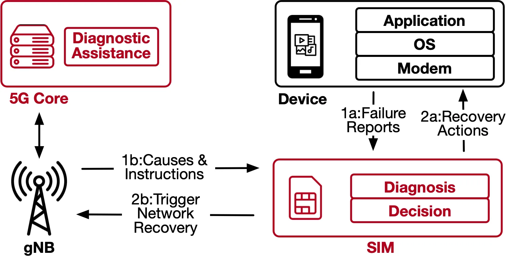
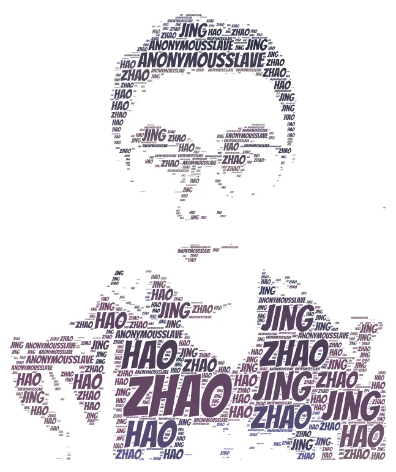
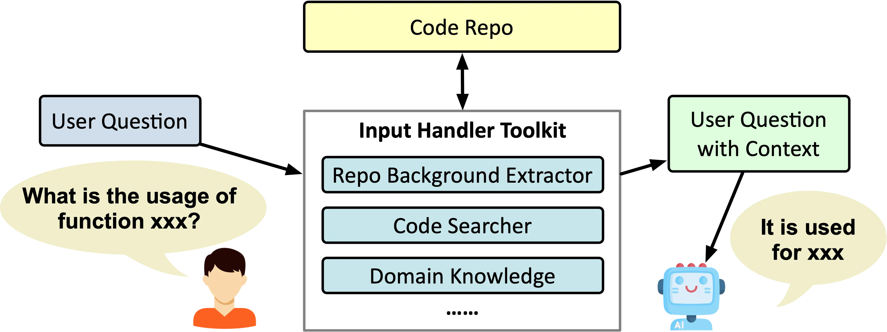
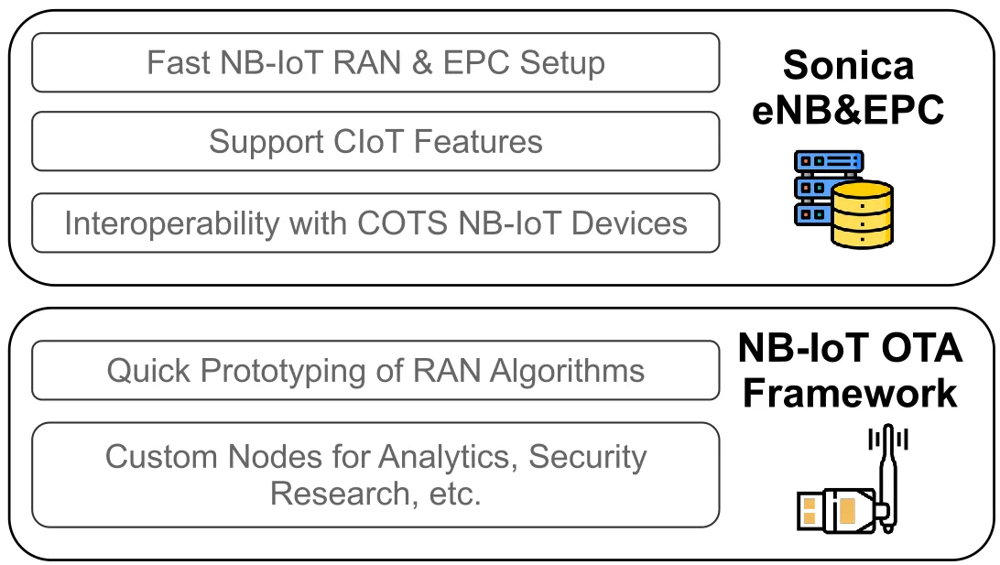
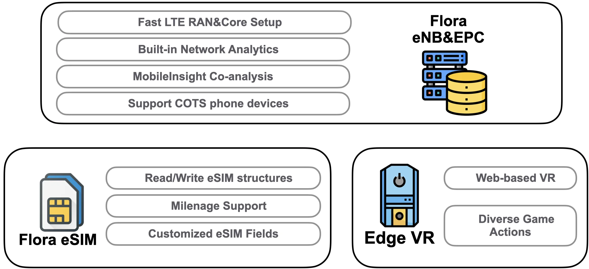
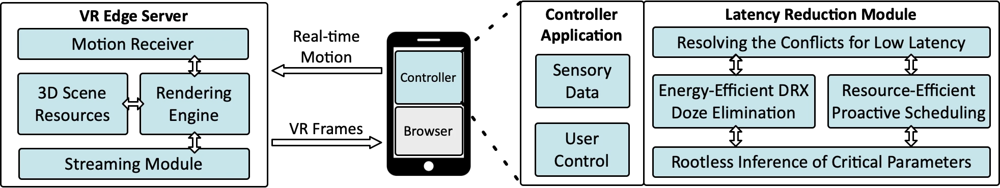

SEED
A SIM-based solution to diagnose and handle 5G failures, bringing better visibility into the mobile network.
Read the paperGOOGLE CLOUD · GCE BARE METAL
ENGINEER & DESIGNER
From the network to the cloud.
Building systems where every
moment matters.
01 / CURRENT FOCUS
Cloud scale. Bare metal precision.Google Cloud × CME Group
I’m a software engineer on Google’s GCE Bare Metal team, working on the low-latency trading platform behind the Google Cloud and CME Group collaboration.
The collaboration brings dedicated bare metal compute and deterministic networking to financial markets—combining the precision of physical infrastructure with the flexibility of the cloud.
Read the Google Cloud storyDirect access to dedicated hardware.
Built for latency-sensitive workloads.
Infrastructure provisioned through cloud APIs.
Platform capabilities described in public Google Cloud materials. CME Group’s migration update · October 2026 ↗
02 / A LITTLE ABOUT ME
I build at the intersection of cloud infrastructure, networking, and real-world systems.
Today, that means GCE Bare Metal at Google. Before that, I received my Ph.D. from the University of California, Los Angeles, advised by Prof. Songwu Lu, and my B.S. in Electronic Engineering from Shanghai Jiao Tong University.
My research spans networked systems, network security, edge and cloud computing, and mobile networks. A common thread: understanding how systems behave, then making them work better.

03 / SELECTED PROJECTS
From the SIM in your pocket
to the systems behind the screen.

A SIM-based solution to diagnose and handle 5G failures, bringing better visibility into the mobile network.
Read the paperRethinking SIM and eSIM authentication with fine-grained access control, informed by vulnerabilities in existing practice.
Read the paperExplore and learn a code repository interactively with GPT.

Explore on GitHubAn open NB-IoT research platform that communicates with off-the-shelf devices.

Explore on GitHubA flexible 4G LTE/5G platform without commodity SIMs, chipsets, or dedicated infrastructure equipment.

Explore the projectDevice-based LTE latency reduction at the application layer, demonstrated through mobile VR.

Read the NSDI ’21 paperKNOWLEDGE / VISUALIZATION
Acemap makes academic discovery visual—connecting research topics and helping people find their way to relevant papers.
Explore AcemapA different perspective on connected knowledge.
04 / PUBLICATIONS
ACM MobiCom 2023.
USENIX NSDI 2023.
ACM SIGCOMM 2022.
IEEE CNS 2022.
ACM MobiCom 2021.
ACM MobiCom 2021.
ACM MobiCom 2021.
USENIX NSDI 2021.
IJCNN 2019.
IEEE Transactions on Mobile Computing (TMC) 2023.
IEEE/ACM Transactions on Networking (TON) 2022.
ACM Transactions on Sensor Networks (TOSN) 2022.